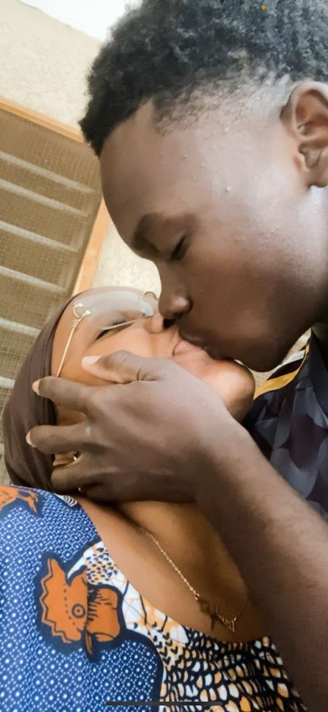

Avant de commencer, petit disclaimer, je suis désolé si le design du site ne te plais pas (j'ai pas designé en tant que tel) mais de 1 j'ai des idées de design nulles et aussi ça fait longtemps que j'ai pas codé donc je suis un peu rouillé désolé
Je ne sais pas si tu te rappelles mais un jour tu étais venue chez moi, on était dehors juste assis sur ta moto à discuter et tu m'a parlé de tes maladies de tes voyages au village, de ta famille (un peu) etc, et ça m'avait fait énormément plaisir parce que ce que tu m'a dit à propos de toi ce jour là bah c'est pas ke genre de chose qu'on dit à tout le minde.
Je ne sais pas peut être pour toi c'était juste quelque chose que tu pouvais raconter à n'importe qui mais moi j'ai eu l'impression que tu m'a fait assez confiance pour t'ouvrir un peu à moi et ça m'a rendu heureux à un point que je ne saurais dire.
Il y a aussi eu le samedi ou avant d'aller à l'école toi et moi on était à la plage. Encore une fois on a rien fait de "Spécial" mais pour moi tout ce qui s'est passé ce jour là était tout simplement magique et c'est l'un des meilleurs moments que j'ai eu à vivre et ce pour la seule et bonne raison qu'on était que tous les deux.
Il y a également le jour de mon anniversaire, c'était honnêtement le plus bel anniversaire que j'ai eu à vivre parce que j'ai pu passer une partie de la journée avec la personne que j'aime le plus au monde, toi. Et ce n'est pas tout, il y a tous ces "petis moments" qu'on a eu à passer ensemble à ne rien faire de "Spécial" mais qui représentent énormément pour moi parce que tu es la seule personne avec qui j'ai envie d'être et de passer du temps. Et au passage tu me dois toujours une journée entière à passer avec toi de 00h à 00h ( avant celles qu'on aura à passer ensemble après notre marriage)
Je ne dis pas ça juste pour te faire plaisir mais parce que c'est ce que je pense et ce que je ressens. A chaque instant, les mêmes pensées me traversent l'esprit, de 1 à quel point tu es une personne magnifique aussi bien intérieurement que extérieurement(Intelligente, chargée en haut et en bas), de 2 à quel point je t'aime et j'ai envie de vivre le reste de ma vie avec toi et de 3 celles que je n'aime pas de ces pensées mais dont je n'arrive pas à me défaire, la peur qu'un jour tu te lasse ou que tu trouves mieux et que tu partes.
J'ai beau résister je ne peux pas m'empêcher d'imaginer un futur ou tu décide de me laisser et à l'heure actuelle c'est ma plus grande peur. Je ne veux pas te perdre Moufidat, ma Freyja, mon Athéna. je ne veux pas avoir à me réveiller un jour et ne pas pouvoir te parler parce que je t'aurai perdu.
Je fais des efforts pour devenir l'homme que tu mérites et je ne sais pas si ça marche, si je m'améliore, mais je n'arrêterai jamais car je veux être un homme dont tu seras fière.
Permets moi de te faire une confidence. ça m'arrivait depuis mais ça c'est accentué ces derniers temps. Je m'imagine des scénarios de toi et moi la plupart du temps marriés ou alors lors de notre mariage. Des scénarios où on est heureux et où on peut regarder derrière et être fiers de ce qu'on a accomplis ensemble.
J'ai conscience que ce que je décris se rapproche peut être plus de l'obsession que de l'amour. Mais je sais que même si je suis obsédé c'est parce que je t'aime. Et je sais que je continuerai à t'aimer toute ma vie et si il y a une vie au delà de la mort, alors je t'aimerai même là car ce n'est pas juste mon corps qui t'aime mais l'essence même de mon existence. De ma conscience à mon âme en passant par mon inconscient psychique, mon corps, mon esprit, toute les parties qui forment mon être sont amoureux de toi.
Mais au-delà de tout ça, le petit garçon qui a toujours voulu connaitre l'amour et avooir une personne qui pourrait le comprendre et le faire sentir aimé, c'est surtout ce petit garçon là qui t'aime.Je ne sais pas ce que nous réserve l'avenir mais je ferai tout ce qui m'est possible, et même plus, je me battrai pour qu'un jour toi et moi on finisse par se dire oui pour toujours et à jamais devant Dieu et devant les hommes en face de nos familles, de nos amis et aux yeux du monde.
Merci d'être rentrée dans ma vie, de m'aimer, de me chérir qcomme tu le fait.
Je t'ai aimé, je t'aime, et je continuerai à t'aimer jusqu'à la fin de mes jours.
NB: regarde en bas de la photo
Ton homme,
Zoki
